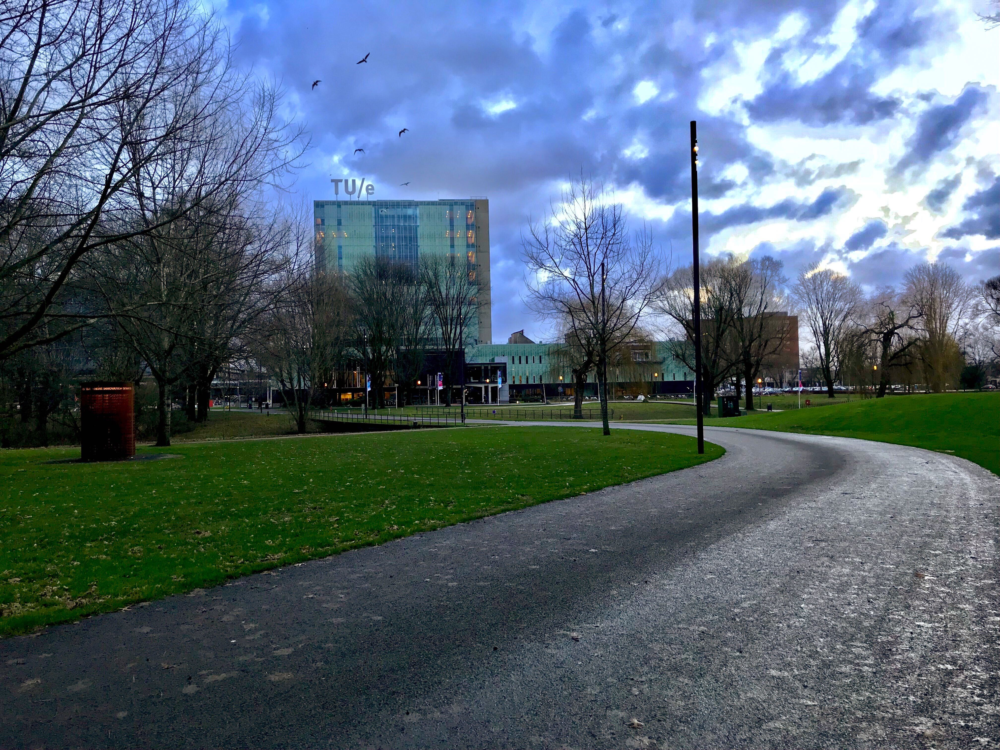
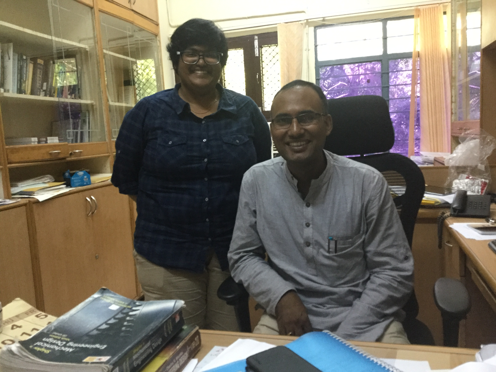

25 Oct. 2017
Engineering Mechanics (EM) is a graduate school that brings all internationally important research groups that are active in the field at 4TU, i.e. Eindhoven University of Technology (TU/e), Delft University of Technology, University of Twente and University of Groningen. For more information about the graduate school check engineeringmechanics.nl.
On every fall, all members of the graduate school gather at the annual two-day EM symposium. The two days contains a plenary lecture (Koiter lecture), thematic workshops with semi-plenary lectures by invited PhD candidates, poster presentation by PhD members of EM and a award ceremony.
Since I am one of the PhD students at the TU/e, I get to choose to be a member of one of the graduate school. Since EM has a responsive staff and interesting topics, I chose EM society. Hence, I get to participate in the annual EM symposium. This year is my first time to participate and also first time participated in the poster presentation. This is very first time, I got a chance to present my current research work to a large group of audience. In addition to academic interaction, EM symposium also gave a platform to a social interaction evening at dinners and drinks. I am looking forward to participate in the EM courses and symposium in the upcoming years.
At the poster presentation
Drinks with the research team
Hotel Papendal, Arnhem, The Netherlands
01 Sep. 2017
After finishing Masters of Science in Computational Mechanics, I am continuing my research with a joint-doctoral position at the Eindhoven University of Technology and University of Pavia with a Erasmus Mundus doctoral fellowship under a program called Simulation Engineering and Entrepreneur Development (SEED). I will be working under the supervision of Dr. Clemens Verhoosel, Prof. Alessandro Reali, Prof. Ferdinando Auricchio and Prof. Harald van Brummelen.
I have arrived at Eindhoven on 25 August and started the position on 1 September. I am very glad to know that I will be sharing office with two other doctoral candidates starting their position on the same day. Harald introduced me to all colleagues in the group and their backgrounds. It is nice to see the energy and dynamics of the group. In this new chapter, I will be focusing on immersed isogeometric analysis. I am very excited and looking forward to this new chapter.
Eindhoven University of Technology (TU/e), Eindhoven, The Netherlands
27 July 2017
After successfully finishing Masters of Science in Computational Mechanics, I went back to India to visit my family and friends. I couldn’t be in India without visiting the place where I started my love towards Computational Mechanics. So, I visited the Indian Institute of Technology Madras, the research group in which I worked as project assistant in 2015.
I met my ex-colleagues and the group leader Dr. Ratna Kumar Annabattula. I thanked him for encouraging me to apply for Erasmus Mundus masters program and advised me to pursue it if I am awarded with a scholarship. Till date, I have carried his feedback and tips to improvise my approach towards research career. It is a pleasure to know him and have his support during the beginning stages of the research career. Walking in the building, where I used to work, brings in many good memories of working in the High Performance Center (HPC), discussions with the groups members, etc..
With Dr. Ratna Kumar Annabattula at Indian Institute of Technology Madras (IITM), Chennai, India
Source: Dr. Sai Gopal D.V.R
21 July 2017
Today, I have, successfully, defended my master thesis on Modeling and simulation of cells and tissues as active fluids under the supervision of Dr. Alejandro Torres-Sanchez and Prof. Marino Arroyo. I enjoyed working on the research topic as I approached it in a variational framework and understood the modeling strategies with close interactions with Alejandro and Marino.
However, the second phase was very intense, especially due to overload of work. We, as a final year master students, have to focus on a 60ECTS thesis and also do couple of courses each of 5ECTS which is not the case in many universities. The courses in parallel to thesis work are very interesting advanced topic, domain decomposition and parallel computing. But it was a pity that we couldn’t spend our full energy on it due to a major focus on the thesis. I gathered my classmates to gave this as a feedback to the program coordinators and hope they consider this and incorporate a few modifications in the program plan.
A very special thanks to Lelia Zielonka (in the picture right-bottom), secretary of International Center for Numerical methods (CIMNE) for helping us with all the official paperworks.
At the M.Sc. Thesis defense
M.Sc. team with Lelia Zielonka
Universitat Politècnica de Catalunya, Barcelona, Spain